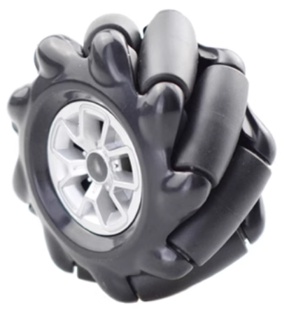

第 10 页 · 落地
≈ 25 min
前置：09 传感与控制
底盘与悬挂 Chassis & Suspension
底盘 = 机器人的"腿"，悬挂 = 它的"膝关节"。 电机输出的旋转要经过轮子（运动转换）变成整车运动，经过悬挂（弹性机构）保证轮子始终贴地。 这一页讲清楚四件事：麦轮怎么解算、我们自己的平行杆悬挂长什么样（三零件 + 铜套铰接的完整工程实现）、铰接为什么这样设计、底盘怎么选。

逆运动学四步推导：从 (vx, vy, ω) 到四个轮速
第一步 · 分解底盘运动：刚体平面运动 = 3 个独立量——vtx（左右，右正）、vty（前后，前正）、ω（yaw 自转，逆时针正）。
第二步 · 轮子轴心的速度：v = vt + ω × r（r 是几何中心指向轮轴的矢量）—— 自转给每个轮叠上一个切向速度，大小 ω·|r|，方向垂直于 r。
第三步 · 投影到辊子方向：轴心速度沿辊子 45° 方向的分量 v∥ = v·u = (−vx+vy)/√2； 垂直分量被无视——垂直于辊子方向时辊子空转（自由滚动），不消耗能量也不产生约束力。
第四步 · 轮子真实转速：vw = v∥/cos45° = −vx + vy。代入各轮位置（a = 半轴距、b = 半轮距）得四轮速：
第二步 · 轮子轴心的速度：v = vt + ω × r（r 是几何中心指向轮轴的矢量）—— 自转给每个轮叠上一个切向速度，大小 ω·|r|，方向垂直于 r。
第三步 · 投影到辊子方向：轴心速度沿辊子 45° 方向的分量 v∥ = v·u = (−vx+vy)/√2； 垂直分量被无视——垂直于辊子方向时辊子空转（自由滚动），不消耗能量也不产生约束力。
第四步 · 轮子真实转速：vw = v∥/cos45° = −vx + vy。代入各轮位置（a = 半轴距、b = 半轮距）得四轮速：
vw1 = vty − vtx + ω(a+b) vw2 = vty + vtx − ω(a+b)
vw3 = vty − vtx − ω(a+b) vw4 = vty + vtx + ω(a+b)
vw3 = vty − vtx − ω(a+b) vw4 = vty + vtx + ω(a+b)
更好用的算法：叠加法（全向底盘通吃）
全向底盘是纯线性系统——分别算出"纯前后""纯左右""纯自转"三种简单运动下各轮的转速，
相加就是合成运动的解。下面这张表就是解算器的全部秘密：
验证一下动画解算器：纯前进（vx=0.6）时四轮同速；纯自转（ω≠0）时左负右正——对角相等。
为什么必须编码电机：四轮速度存在约束关系，任何一轮速度不准 → 辊子与地面滑动摩擦 →
运动异常 + 麦轮寿命骤减。这就是底盘页反复强调"直流+编码器闭环"的力学根据。
| 运动 | 前左 FL | 前右 FR | 后左 RL | 后右 RR |
|---|---|---|---|---|
| 纯前后 vty | +v | +v | +v | +v |
| 纯左右 vtx | −v | +v | −v | +v |
| 纯自转 ω | +ω(a+b) | −ω(a+b) | −ω(a+b) | +ω(a+b) |
| 合成 = 三行相加 | Σ₁ | Σ₂ | Σ₃ | Σ₄ |
为什么是麦轮，不是全向轮？四种安装构型怎么选
全向轮（Omni）vs 麦轮（Mecanum）：全向轮的辊子转轴与轮毂轴垂直，麦轮是 45°。
看似只差一个角度，但 45° 让麦轮可以像传统轮子一样装在相互平行的轴上——
全向轮要发挥同样功能，几根轮毂轴之间必须成 60°/90°/120°，制造麻烦。所以工业全向平台（如麦轮叉车）几乎都用麦轮。
四种安装构型（X/O 指辊子与地面接触形成的图形，正方/长方指接触点围成的形状）： X-正方形——转动力矩都过同一点，yaw 无法主动旋转，几乎不用；X-长方形——能转但力臂短，少见； O-正方形——理想但受底盘形状限制，可遇不可求；O-长方形——转动力臂长，最常用，我们选它。
参考：知乎专栏《麦克纳姆轮浅谈》（zhuanlan.zhihu.com/p/20282234）。
四种安装构型（X/O 指辊子与地面接触形成的图形，正方/长方指接触点围成的形状）： X-正方形——转动力矩都过同一点，yaw 无法主动旋转，几乎不用；X-长方形——能转但力臂短，少见； O-正方形——理想但受底盘形状限制，可遇不可求；O-长方形——转动力臂长，最常用，我们选它。
参考：知乎专栏《麦克纳姆轮浅谈》（zhuanlan.zhihu.com/p/20282234）。
机械设计
- 四轮速度由 (vx, vy, ω) 唯一确定（叠加法三行相加）
- 辊子 45°：垂直分量被辊子"滚掉"，只留有效分量
- O-长方形安装：旋转力臂长，转向响应好
机械制造
- 麦轮成品购买（A/B 轮各 2，看标注区分，装错方向整车乱跑）
- 安装孔位与电机输出轴对中，偏心会抖
- 四轮必须用编码电机闭环（约束关系的力学要求）